|
15th November
There are hardly any riding
pictures so don't moan.
Got up early and went for a
job interview. I didn't get it.
Went to pick up Chris. Chris' House.
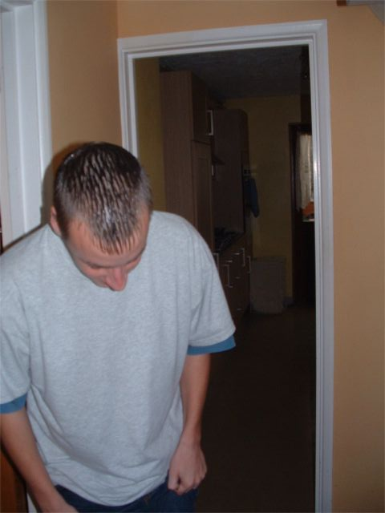
Chris' Mum's Hat.
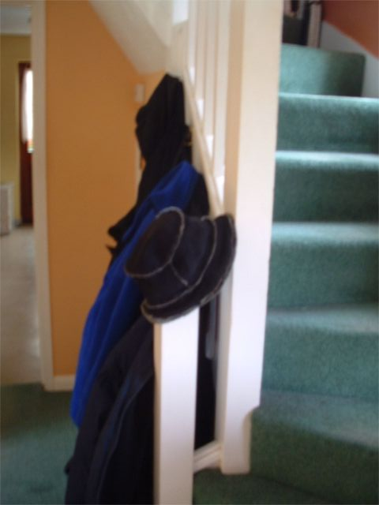
Chris' Dad's Van
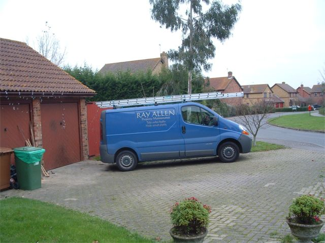
Chris' Garage
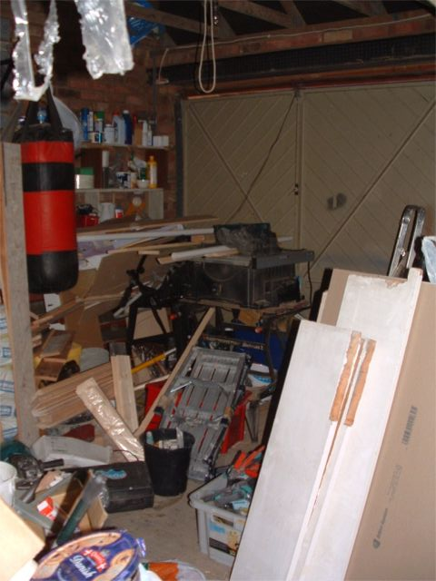
Romford and the moguls
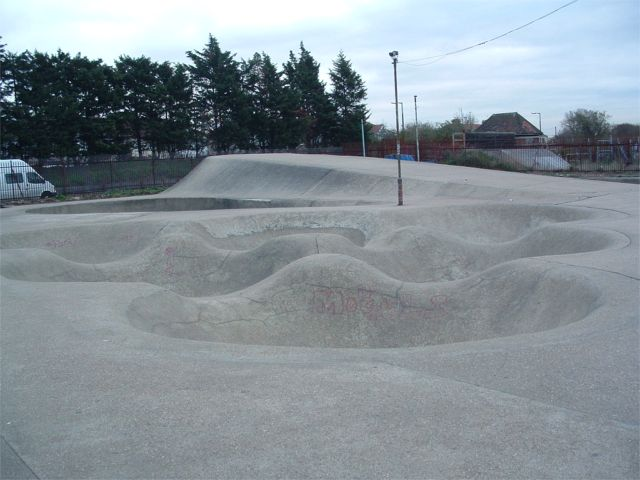
Nigel and the street bit. It was really fun.
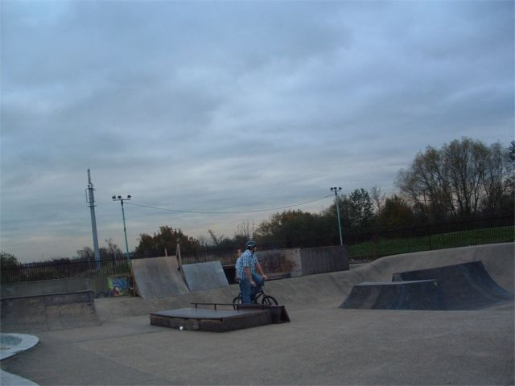
Nigel on the secret hip
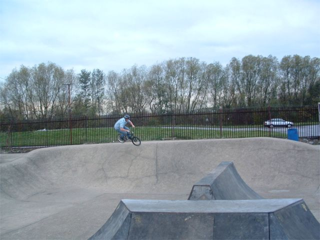
It was more fun to do it this way not the other way.
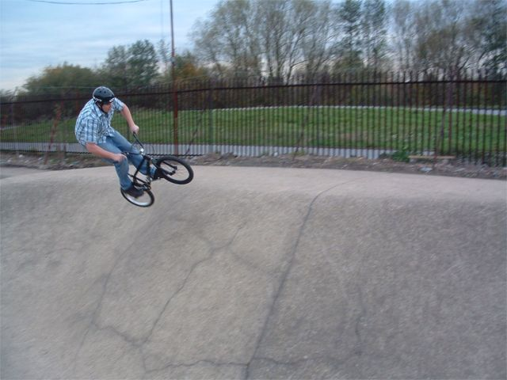
Chris - snake run
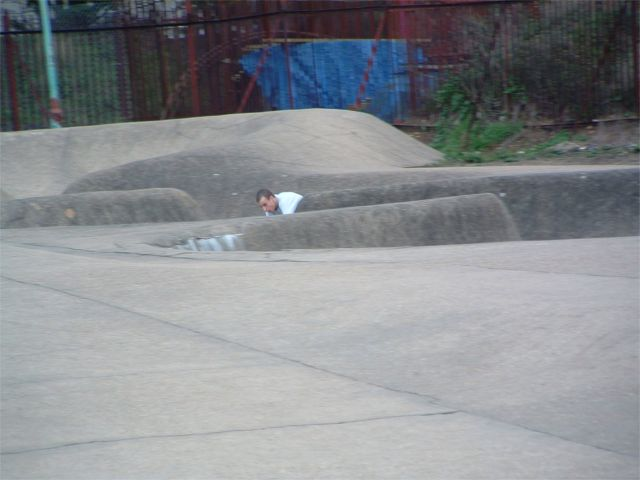
Nigel on the moguls
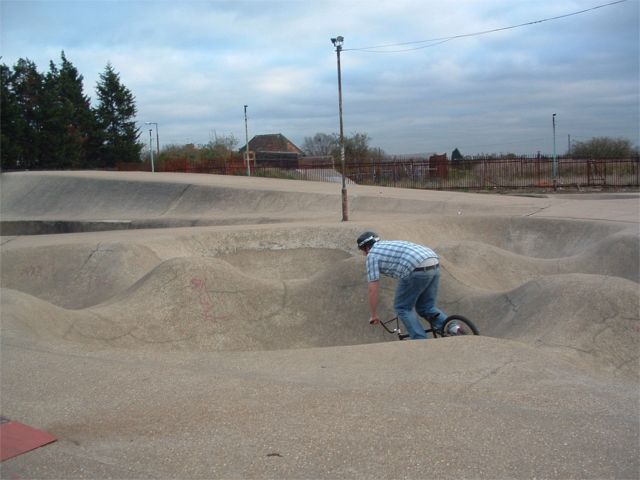
Chris on the fun box. Hard to clear.
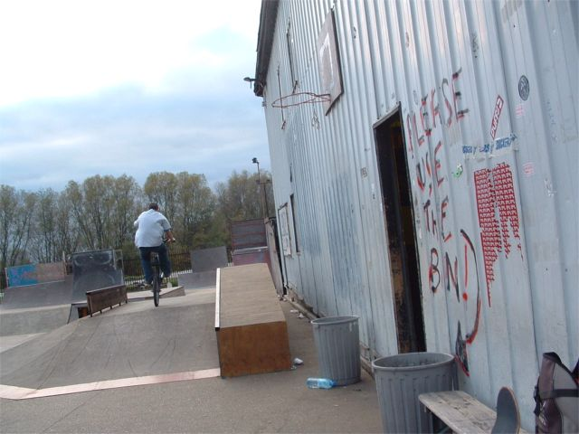
Tom came from Epsom but it took ages to find
It's the hardest place in the world to find
Anyway when Tom got here it was dark
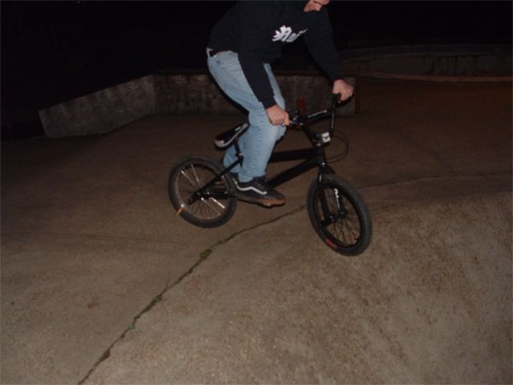
Tom airing the mogul hip
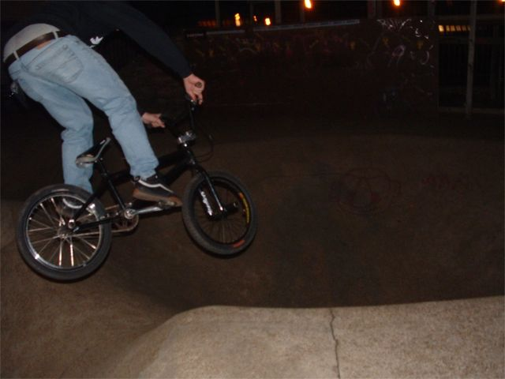
Nigel carving the massssssive bowl. It's massive.
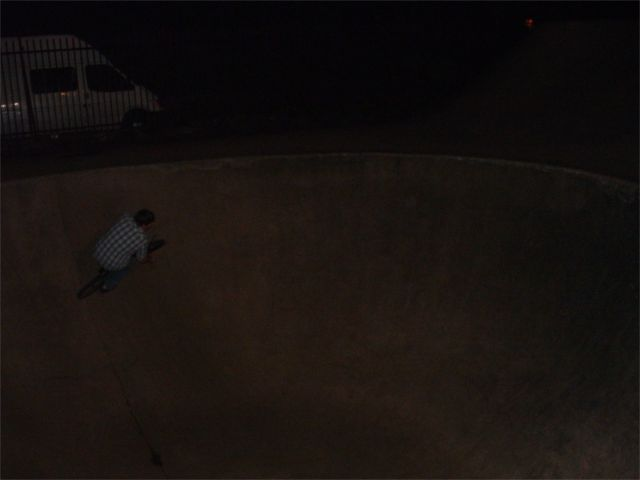
Tom on the wall. Wheel on fire.
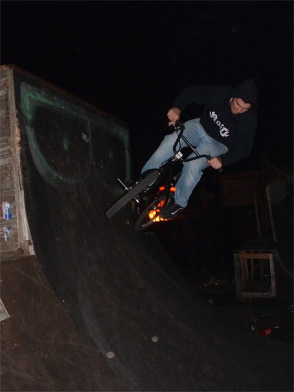
Nigel on fire.
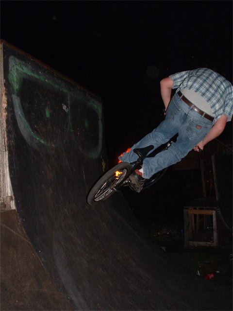
Tom on fire
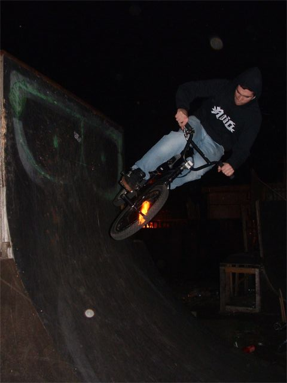
More fire
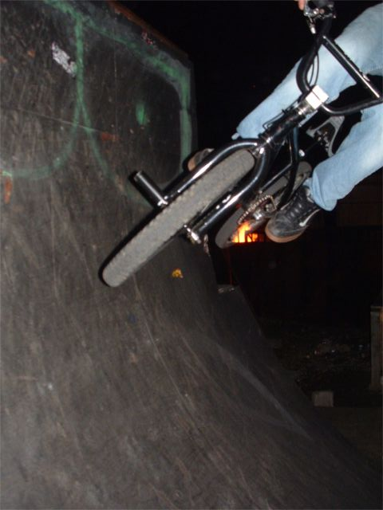
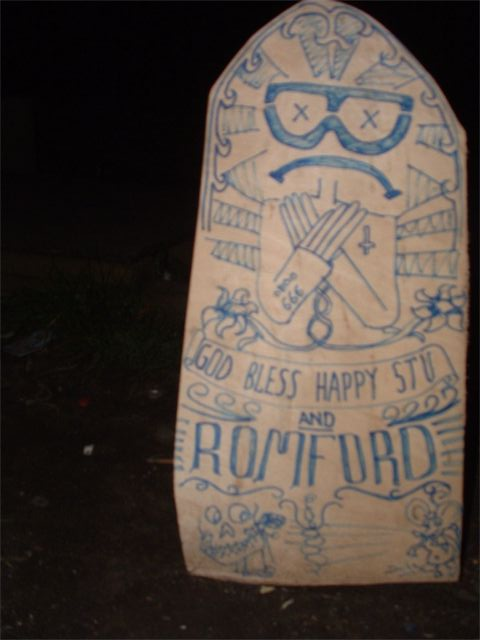
Nigel carving the pool
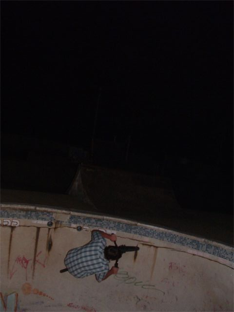
Tom, double peg the over vert pool?
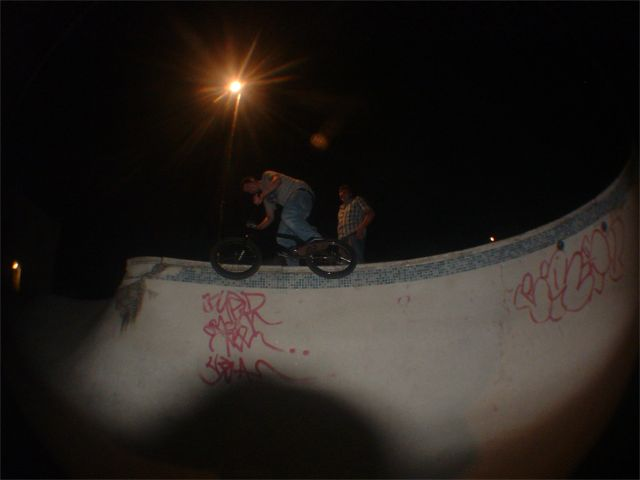
Tom carve
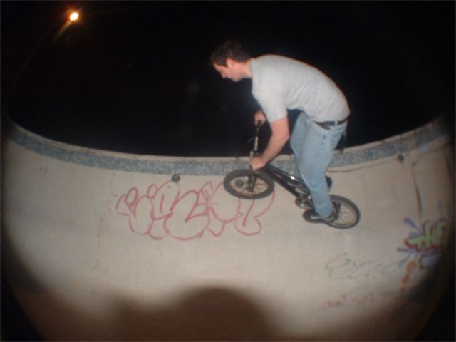
Nigel carving the crack
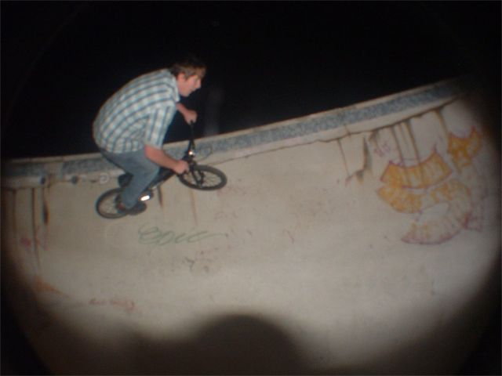
Tom on the crack
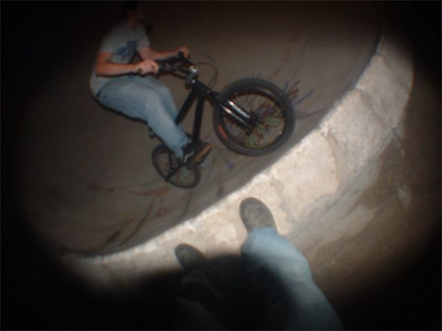
Nigel crack
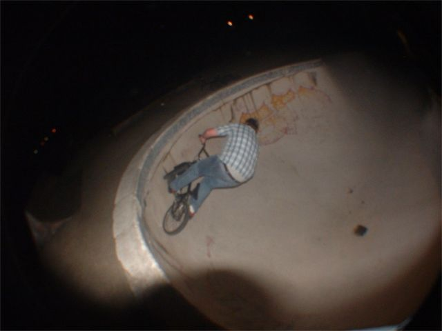
Anymore brown crack jokes?
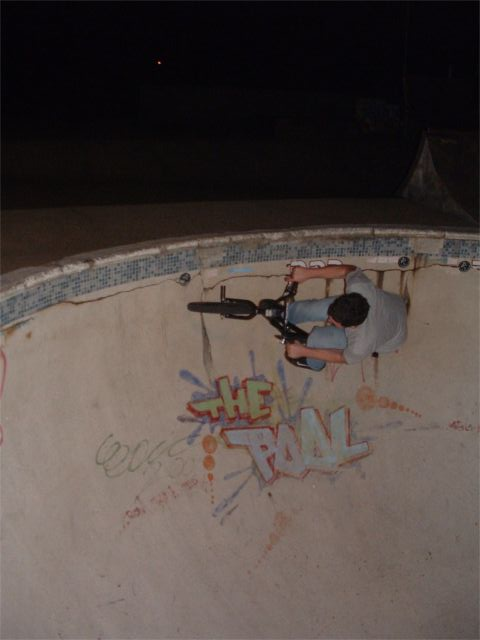
More dirty brown crack
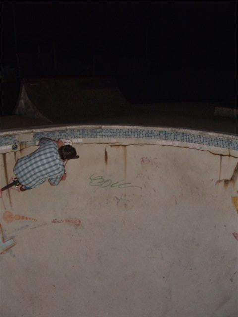
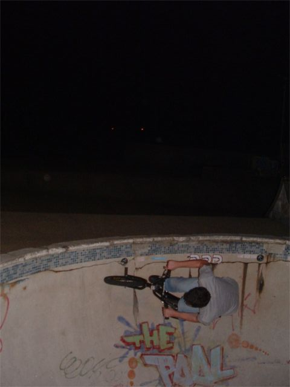
Tom said this was a paedo cake.
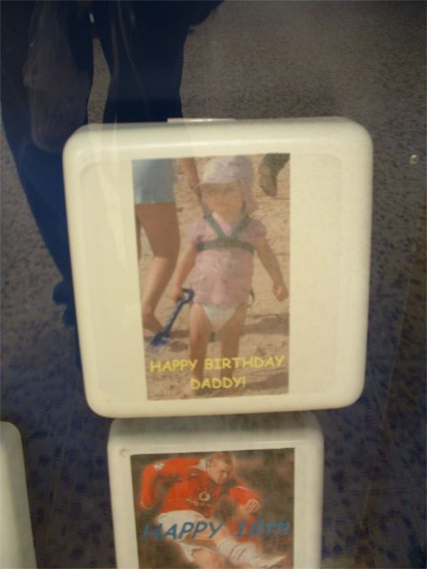
Went to Tesco to buy food. Look bottom right.
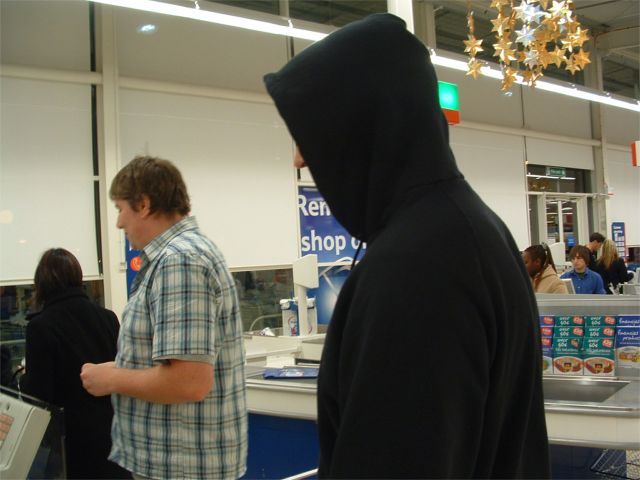
Close up surveillance
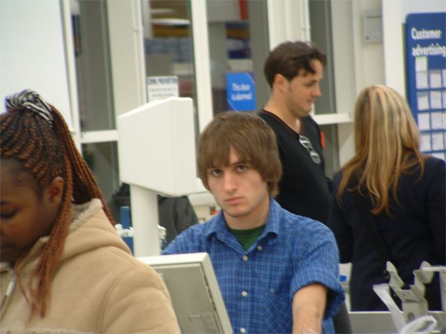
Waffles are nice.
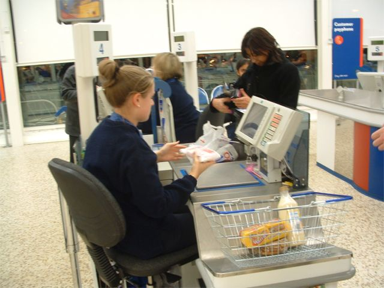
Outside Tesco. The End.
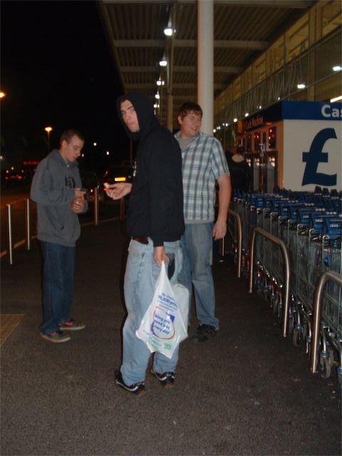 |